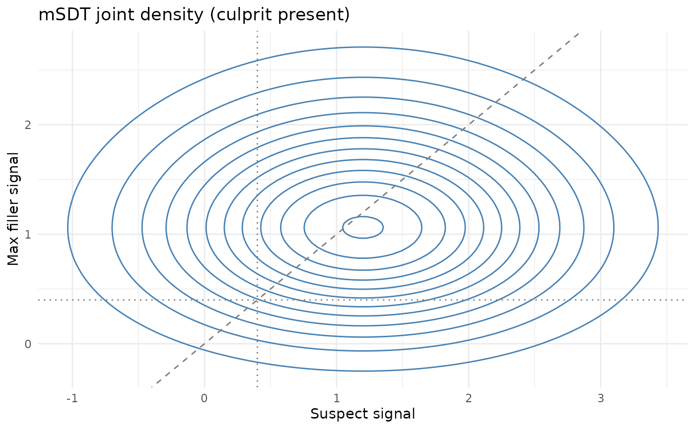
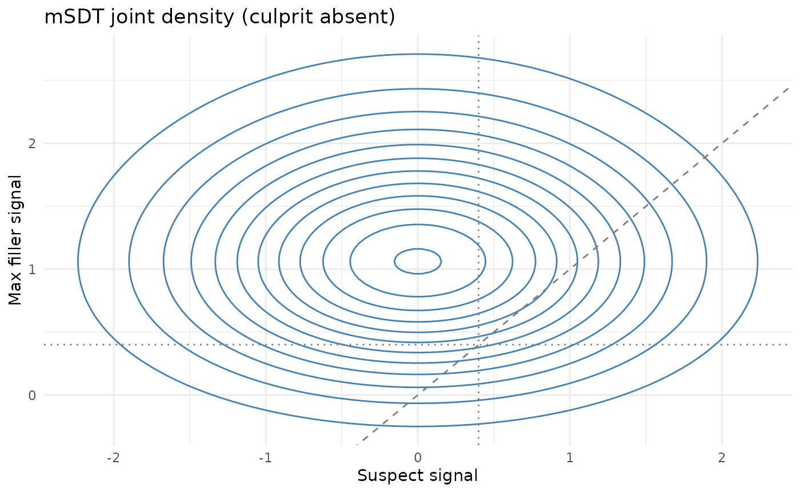

Overview
This vignette introduces core utilities for the multi-item SDT (mSDT) model (Yang, Burke, & Healy, 2025), focusing on components that are mathematically well-defined under the equal-variance, independent filler assumptions.
Key features:
- The max filler distribution for (m - 1) independent standard normal fillers
- Parameter estimation from rejection rates in culprit-absent and culprit-present lineups
- Joint distribution visualization (suspect vs. max filler)
Max filler distribution
library(r4lineups)
dmax_filler(0, lineup_size = 6)
#> [1] 0.1246695
pmax_filler(0, lineup_size = 6)
#> [1] 0.03125
qmax_filler(0.5, lineup_size = 6)
#> [1] 1.128998Moments are computed numerically:
max_filler_moments(6)
#> $mean
#> [1] 1.162964
#>
#> $var
#> [1] 0.4475341
#>
#> $skewness
#> [1] 0.3025709Estimating mSDT parameters from rejection rates
Let
- = rejection rate in culprit-absent lineups
- = rejection rate in culprit-present lineups
Then (Yang et al., 2025):
Use the helper:
estimate_msdt_params(pr_rej_I = 0.25, pr_rej_G = 0.15, lineup_size = 6)
#> $gamma
#> [1] 0.8193286
#>
#> $dprime
#> [1] 0.8789708Scope of this estimator.
estimate_msdt_params() is a method-of-moments estimator
that is exactly identified from the two rejection rates: the
culprit-absent rejection rate fixes
,
and the culprit-absent vs culprit-present rejection gap fixes
.
It is information-lossy — it ignores the composition of choices
(suspect-ID vs filler-ID) and the spread of filler choices, which are
the most diagnostic outcomes. If you have the aggregate response
breakdown, fit_max_sdt() uses all suspect/filler/reject
counts in a restricted single-criterion, equal-variance
Independent-Observations/MAX fit. It minimizes Pearson chi-squared
rather than likelihood and is not the complete confidence-based Wixted
et al. (2018) model. The 2-HT model (fit_winter_2ht())
provides a different process account.
Joint distribution plots
plot_msdt_joint(dprime = 1.2, gamma = 0.4, lineup_size = 6,
lineup_type = "culprit_present")
plot_msdt_joint(dprime = 1.2, gamma = 0.4, lineup_size = 6,
lineup_type = "culprit_absent")